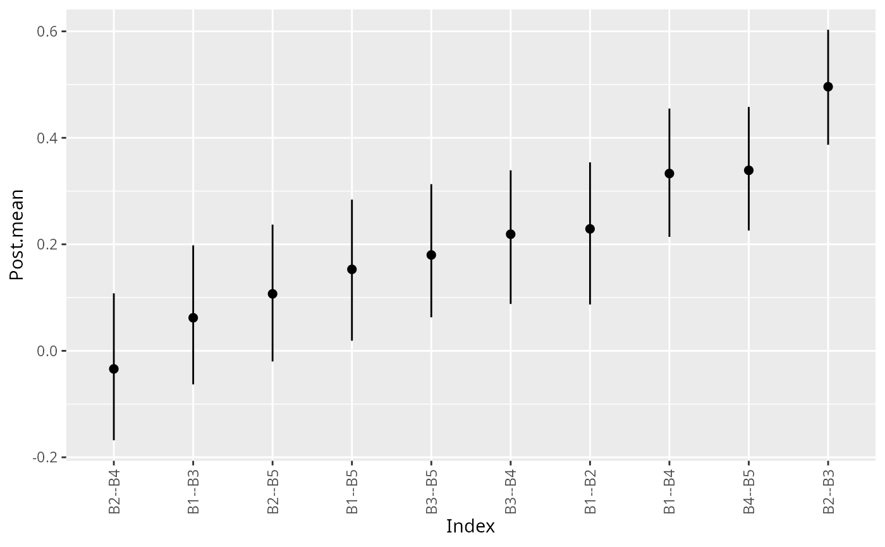

summary.estimate Objectsplot.summary.estimate.RdVisualize the posterior distributions for each partial correlation.
# S3 method for summary.estimate plot(x, color = "black", size = 2, width = 0, ...)
| x | An object of class |
|---|---|
| color | Character string. The color for the error bars.
(defaults to |
| size | Numeric. The size for the points (defaults to |
| width | Numeric. The width of error bar ends (defaults to |
| ... | Currently ignored |
A ggplot object.
#>#>summary(fit)#> BGGM: Bayesian Gaussian Graphical Models #> --- #> Type: continuous #> Analytic: FALSE #> Formula: #> Posterior Samples: 250 #> Observations (n): #> Nodes (p): 20 #> Relations: 190 #> --- #> Call: #> estimate(Y = Y, iter = 250) #> --- #> Estimates: #> Relation Post.mean Post.sd Cred.lb Cred.ub #> B1--B2 0.190 0.072 0.048 0.327 #> B1--B3 0.016 0.073 -0.112 0.167 #> B2--B3 0.399 0.059 0.274 0.507 #> B1--B4 0.318 0.068 0.195 0.449 #> B2--B4 -0.031 0.072 -0.184 0.092 #> B3--B4 0.256 0.070 0.121 0.382 #> B1--B5 0.143 0.068 0.003 0.267 #> B2--B5 0.035 0.072 -0.105 0.189 #> B3--B5 0.111 0.071 -0.037 0.249 #> B4--B5 0.214 0.070 0.080 0.356 #> B1--C1 -0.038 0.074 -0.175 0.096 #> B2--C1 -0.020 0.073 -0.167 0.116 #> B3--C1 -0.039 0.068 -0.154 0.104 #> B4--C1 0.126 0.073 -0.009 0.259 #> B5--C1 0.189 0.073 0.033 0.322 #> B1--C2 -0.050 0.071 -0.190 0.078 #> B2--C2 0.094 0.073 -0.056 0.223 #> B3--C2 -0.003 0.069 -0.124 0.147 #> B4--C2 0.159 0.072 0.025 0.306 #> B5--C2 0.136 0.075 -0.006 0.277 #> C1--C2 0.195 0.070 0.069 0.328 #> B1--D1 0.056 0.078 -0.089 0.192 #> B2--D1 -0.006 0.073 -0.144 0.145 #> B3--D1 -0.015 0.073 -0.170 0.117 #> B4--D1 -0.025 0.074 -0.168 0.118 #> B5--D1 -0.075 0.071 -0.219 0.060 #> C1--D1 0.107 0.066 -0.036 0.218 #> C2--D1 0.079 0.070 -0.063 0.229 #> B1--D2 -0.047 0.067 -0.160 0.089 #> B2--D2 -0.094 0.066 -0.214 0.036 #> B3--D2 -0.110 0.068 -0.236 0.022 #> B4--D2 0.178 0.070 0.035 0.300 #> B5--D2 -0.055 0.076 -0.206 0.087 #> C1--D2 -0.125 0.067 -0.239 0.015 #> C2--D2 -0.032 0.077 -0.199 0.114 #> D1--D2 0.060 0.073 -0.084 0.200 #> B1--D3 -0.069 0.074 -0.224 0.074 #> B2--D3 0.043 0.070 -0.105 0.176 #> B3--D3 0.018 0.071 -0.132 0.151 #> B4--D3 0.084 0.069 -0.046 0.204 #> B5--D3 0.071 0.070 -0.067 0.198 #> C1--D3 0.095 0.068 -0.032 0.228 #> C2--D3 0.003 0.074 -0.139 0.138 #> D1--D3 0.093 0.072 -0.034 0.224 #> D2--D3 0.093 0.075 -0.048 0.239 #> B1--D4 0.201 0.066 0.082 0.321 #> B2--D4 0.057 0.075 -0.102 0.208 #> B3--D4 0.023 0.072 -0.103 0.156 #> B4--D4 0.057 0.074 -0.073 0.201 #> B5--D4 -0.004 0.069 -0.136 0.121 #> C1--D4 -0.064 0.068 -0.181 0.071 #> C2--D4 0.005 0.072 -0.148 0.138 #> D1--D4 0.012 0.076 -0.129 0.152 #> D2--D4 0.223 0.068 0.084 0.348 #> D3--D4 0.478 0.057 0.359 0.578 #> B1--D5 0.093 0.069 -0.028 0.225 #> B2--D5 0.083 0.073 -0.058 0.221 #> B3--D5 0.116 0.072 -0.028 0.253 #> B4--D5 -0.113 0.072 -0.246 0.022 #> B5--D5 -0.017 0.071 -0.146 0.116 #> C1--D5 -0.003 0.074 -0.139 0.137 #> C2--D5 0.191 0.061 0.061 0.307 #> D1--D5 -0.020 0.069 -0.159 0.114 #> D2--D5 0.201 0.070 0.051 0.328 #> D3--D5 -0.135 0.070 -0.283 -0.012 #> D4--D5 0.045 0.072 -0.104 0.170 #> B1--D6 0.062 0.071 -0.084 0.194 #> B2--D6 0.053 0.073 -0.084 0.198 #> B3--D6 -0.059 0.068 -0.183 0.073 #> B4--D6 -0.083 0.072 -0.220 0.061 #> B5--D6 -0.050 0.071 -0.195 0.070 #> C1--D6 0.081 0.071 -0.070 0.206 #> C2--D6 -0.007 0.079 -0.152 0.165 #> D1--D6 0.001 0.070 -0.130 0.132 #> D2--D6 0.071 0.073 -0.077 0.216 #> D3--D6 0.000 0.077 -0.165 0.151 #> D4--D6 0.059 0.071 -0.092 0.200 #> D5--D6 0.118 0.069 -0.023 0.238 #> B1--D7 0.030 0.073 -0.110 0.177 #> B2--D7 -0.097 0.076 -0.249 0.042 #> B3--D7 0.104 0.068 -0.016 0.240 #> B4--D7 -0.113 0.070 -0.258 0.026 #> B5--D7 -0.022 0.074 -0.164 0.118 #> C1--D7 0.028 0.070 -0.096 0.173 #> C2--D7 0.086 0.074 -0.047 0.239 #> D1--D7 -0.053 0.071 -0.184 0.073 #> D2--D7 0.152 0.069 0.015 0.282 #> D3--D7 -0.055 0.070 -0.201 0.074 #> D4--D7 -0.044 0.067 -0.175 0.078 #> D5--D7 0.069 0.068 -0.057 0.190 #> D6--D7 0.446 0.055 0.330 0.545 #> B1--E1 0.048 0.073 -0.093 0.182 #> B2--E1 -0.081 0.078 -0.228 0.068 #> B3--E1 0.015 0.072 -0.121 0.163 #> B4--E1 0.003 0.073 -0.135 0.146 #> B5--E1 0.190 0.073 0.056 0.318 #> C1--E1 -0.034 0.075 -0.182 0.109 #> C2--E1 0.118 0.068 -0.006 0.230 #> D1--E1 0.036 0.070 -0.100 0.164 #> D2--E1 0.121 0.068 -0.010 0.256 #> D3--E1 -0.076 0.075 -0.225 0.065 #> D4--E1 0.170 0.075 0.024 0.307 #> D5--E1 0.042 0.075 -0.101 0.170 #> D6--E1 0.006 0.076 -0.147 0.144 #> D7--E1 0.142 0.073 -0.007 0.276 #> B1--E2 -0.016 0.070 -0.154 0.117 #> B2--E2 0.163 0.071 0.023 0.308 #> B3--E2 0.001 0.065 -0.118 0.129 #> B4--E2 -0.054 0.065 -0.186 0.066 #> B5--E2 -0.041 0.072 -0.180 0.094 #> C1--E2 0.001 0.074 -0.150 0.130 #> C2--E2 0.045 0.068 -0.090 0.173 #> D1--E2 0.115 0.065 -0.001 0.238 #> D2--E2 -0.045 0.069 -0.167 0.090 #> D3--E2 0.129 0.074 -0.028 0.259 #> D4--E2 -0.035 0.071 -0.173 0.100 #> D5--E2 0.000 0.073 -0.129 0.145 #> D6--E2 0.056 0.069 -0.078 0.177 #> D7--E2 0.067 0.073 -0.059 0.220 #> E1--E2 0.256 0.069 0.110 0.378 #> B1--E3 -0.028 0.077 -0.162 0.107 #> B2--E3 -0.024 0.068 -0.155 0.118 #> B3--E3 0.114 0.073 -0.032 0.244 #> B4--E3 -0.004 0.072 -0.140 0.159 #> B5--E3 -0.051 0.074 -0.200 0.098 #> C1--E3 0.118 0.067 -0.010 0.255 #> C2--E3 0.020 0.068 -0.113 0.139 #> D1--E3 0.095 0.067 -0.047 0.222 #> D2--E3 0.110 0.073 -0.031 0.244 #> D3--E3 -0.045 0.071 -0.188 0.112 #> D4--E3 0.026 0.071 -0.117 0.173 #> D5--E3 -0.003 0.073 -0.150 0.128 #> D6--E3 0.057 0.081 -0.100 0.215 #> D7--E3 0.017 0.069 -0.124 0.141 #> E1--E3 -0.008 0.067 -0.137 0.117 #> E2--E3 0.054 0.067 -0.061 0.188 #> B1--E4 -0.152 0.072 -0.303 -0.022 #> B2--E4 0.110 0.069 -0.031 0.245 #> B3--E4 0.049 0.077 -0.114 0.201 #> B4--E4 0.034 0.079 -0.128 0.175 #> B5--E4 0.187 0.069 0.055 0.327 #> C1--E4 -0.041 0.072 -0.177 0.092 #> C2--E4 0.046 0.070 -0.092 0.182 #> D1--E4 -0.031 0.078 -0.165 0.122 #> D2--E4 -0.016 0.070 -0.150 0.114 #> D3--E4 -0.128 0.071 -0.252 0.026 #> D4--E4 0.071 0.072 -0.069 0.198 #> D5--E4 0.008 0.071 -0.127 0.148 #> D6--E4 0.149 0.073 -0.004 0.292 #> D7--E4 -0.106 0.072 -0.236 0.036 #> E1--E4 0.025 0.069 -0.095 0.171 #> E2--E4 0.129 0.076 -0.013 0.286 #> E3--E4 0.311 0.066 0.159 0.432 #> B1--E5 0.033 0.071 -0.091 0.181 #> B2--E5 -0.075 0.076 -0.232 0.046 #> B3--E5 0.063 0.076 -0.093 0.212 #> B4--E5 -0.050 0.072 -0.184 0.080 #> B5--E5 0.032 0.077 -0.118 0.180 #> C1--E5 -0.012 0.072 -0.148 0.141 #> C2--E5 -0.163 0.068 -0.295 -0.047 #> D1--E5 0.145 0.071 -0.011 0.277 #> D2--E5 0.042 0.070 -0.098 0.178 #> D3--E5 0.110 0.073 -0.038 0.235 #> D4--E5 0.007 0.074 -0.133 0.154 #> D5--E5 0.299 0.066 0.166 0.421 #> D6--E5 0.135 0.070 0.003 0.266 #> D7--E5 0.058 0.078 -0.084 0.201 #> E1--E5 0.018 0.068 -0.132 0.144 #> E2--E5 -0.051 0.069 -0.172 0.091 #> E3--E5 -0.038 0.074 -0.175 0.110 #> E4--E5 0.158 0.072 0.031 0.299 #> B1--E6 0.050 0.076 -0.089 0.197 #> B2--E6 0.144 0.068 0.025 0.280 #> B3--E6 0.052 0.069 -0.080 0.181 #> B4--E6 -0.001 0.072 -0.148 0.132 #> B5--E6 0.076 0.066 -0.069 0.199 #> C1--E6 -0.017 0.070 -0.146 0.120 #> C2--E6 -0.061 0.071 -0.226 0.075 #> D1--E6 -0.033 0.070 -0.165 0.092 #> D2--E6 -0.021 0.076 -0.167 0.129 #> D3--E6 0.031 0.067 -0.095 0.182 #> D4--E6 -0.057 0.073 -0.184 0.079 #> D5--E6 0.013 0.068 -0.111 0.130 #> D6--E6 0.107 0.071 -0.033 0.246 #> D7--E6 0.055 0.071 -0.089 0.194 #> E1--E6 0.018 0.070 -0.106 0.170 #> E2--E6 -0.058 0.069 -0.191 0.069 #> E3--E6 0.055 0.072 -0.106 0.177 #> E4--E6 0.103 0.073 -0.027 0.245 #> E5--E6 0.196 0.071 0.061 0.313 #> ---# }